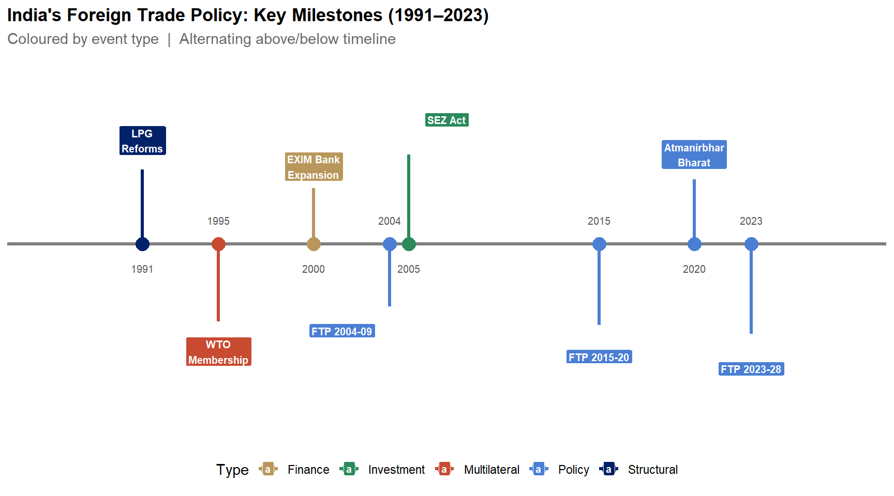

Lecture 18: India’s Agricultural Trade and Foreign Trade Policy
Econ 2203 | International Trade and Policy in Agriculture
Department of Development Economics
2026-08-22
Opening Reflection
Eighteen weeks ago, we asked:
Why do countries trade? And what does that mean for the 600 million Indians who depend on agriculture for their livelihoods?
Today, we can answer this with theory + data + institutions + policy.
What we built (in 5 blocks)
- Weeks 1–2: Why trade? Gains and features
- Weeks 3–6: Core theory (Ricardo → H–O → new trade)
- Weeks 7–8: Protectionism tools (tariffs, quotas, subsidies)
- Weeks 9–12: BoP + exchange rates (macro context)
- Weeks 13–18: WTO/AoA/SPS + export procedures + India strategy
The Full Chain: Course Synthesis Diagram
Course Synthesis: International Trade Logic Chain
- Comparative Advantage → countries gain from specialisation
- Gains from Trade → mediated by terms of trade
- Trade Policy → tariffs, quotas, subsidies shape distribution
- BOP & Exchange Rates → macro context for trade flows
- International Institutions → WTO, AoA, SPS discipline policy
- India’s Strategy → Export promotion + selective protection
Every lecture has been one step in this chain.
The central tension of the entire course:
Free trade maximises efficiency — comparative advantage theory, consumer gains, global welfare.
But agriculture is not like other sectors — food is existential, farming communities are politically powerful, and market failures (information asymmetry, price volatility, public goods in R&D) are pervasive.
The discipline of agricultural trade economics is, fundamentally, the study of how societies navigate this tension.
India’s Foreign Trade Policy: Key Milestones

Figure 1: India’s trade policy evolved from the 1991 LPG reforms through WTO accession and successive FTPs, culminating in the landmark FTP 2023-28 targeting USD 2 trillion by 2030. Source: DGFT, Ministry of Commerce and Industry, GoI.
India’s agricultural trade (FY2024): headline numbers
- Exports: $43.7B
- Imports: $28.2B
- Surplus: $15.5B
- Global rank: ~9th largest agri exporter (WTO)
- Agriculture ≈ 11% of India’s merchandise exports
FY2024 is lower than the FY2022 peak, but still among India’s highest-ever export years.
Why FY2022 was a record year
- Global food commodity prices spiked post-pandemic
- Russia–Ukraine war disrupted major suppliers
- Strong basmati demand (Gulf)
- Marine exports expanded (high aquaculture output)
Why FY2024 fell from the peak
- Rice export restrictions tightened from 2023 (credibility + volumes)
- Global commodity prices corrected from highs
- Cotton profitability weakened (cost + pest pressure)
Export composition (FY2024): where the dollars come from
- Marine products (~17%): India’s single largest agri export category
- Non-basmati rice (~15%)
- Basmati rice (~13%)
- Processed foods (~11%)
- Spices (~9%)
Rice is ~28% of agri exports in FY2024 → market power, but also concentration risk.
Rice concentration: market power vs credibility
- When India restricts rice exports, global prices can spike
- Many countries rely on Indian rice for food security
- Export controls create credibility risk for India as a supplier
- Export earnings become more volatile (policy shocks)
Geographic Distribution: Where India Exports
India’s agri export destinations (FY2024, approximate shares):
- USA (~13%): marine, processed food, spices
- UAE (~10%): rice, meat, fruits, spices
- Bangladesh (~9%): rice, onion, sugar, cotton
- China (~7%): castor oil, cotton, marine
- Saudi Arabia (~5%): rice, meat, fruits
Emerging markets to watch
- Japan & South Korea: premium + organic; high unit value
- East Africa: rice and pulses; urban demand rising
- Gulf (Oman, Qatar, Kuwait): processed food + dairy demand
- Southeast Asia: marine + spices + rice; fast-growing middle class
Case: India–UAE CEPA (May 2022)
What CEPA did (agriculture examples):
- Preferential tariffs for basmati, seafood, fruits, and processed foods (select lines)
- Early outcome: India–UAE agri trade up ~28% (FY2023)
Takeaway: FTAs with meaningful agricultural chapters can raise market access and incentivise quality upgrading.
Import Profile: India’s Agricultural Dependencies
India’s biggest agricultural import exposure is edible oils.
- Edible oils (palm + soy + sunflower): ~$14B+ annual bill; ~60–65% of consumption imported
- Pulses: ~$2–3B; key sources include Canada, Myanmar, Australia
- Other items (fruits, cashew, spices) are smaller and less macro-critical
Key point: edible oils are the single largest driver of India’s agri import vulnerability.
Why edible oil dependence is a structural vulnerability
- Household inflation sensitivity: global edible oil prices pass through quickly
- External vulnerability: export bans and war shocks can create sudden shortages
- Persistent gap: demand growth has outpaced domestic oilseed productivity
Policy response: NMEO–OP (2021)
- Goal: expand oil palm and raise domestic edible oil output
- Constraints: land availability, 3–4 year gestation, crop-choice incentives
- Implication: dependence likely remains a medium-run constraint even with policy push
The Value Addition Opportunity
India often exports raw / semi-processed products. Value addition raises earnings per tonne.
- Value addition = processing + branding + standards + cold chain
- Big gains are in processed foods, nutraceuticals, and ready-to-cook formats
- Binding constraints are typically quality compliance, scale, and logistics
Example 1: Cashew (raw vs processed)
- India produces raw cashew, but much processing happens abroad
- Processed grades + packaging command multiples of the raw price
- Domestic processing = jobs + higher export value + brand ownership
Example 2: Turmeric (raw vs extracts)
- Raw turmeric is a bulk commodity
- Extracts/curcumin and finished supplements capture most of the margin
- Needs certification, R&D, and consistent quality
Example 3: Shrimp (commodity vs value-added)
- Commodity exports: raw frozen shrimp
- Value-added: breaded / marinated / ready-to-cook formats (price premium)
- Requires cold chain, HACCP compliance, and processing capacity
FTP 2023–28: what it implies for value addition
- Prioritise processed food and RTE/RCC categories
- Build compliance: FSSAI-aligned plants, traceability, lab testing
- Use branding tools: ODOP + GI where appropriate
Foreign Trade Policy (FTP) 2023–2028: overview
- Released March 31, 2023 (Ministry of Commerce)
- Vision: total exports (goods + services) reach $2T by 2030
- Shift: from export subsidies → tax remission (RoDTEP)
- Emphasis: collaboration + paperless, faster processes
- New: explicit e-commerce export push (target $200B by 2030)
FTP 2023–2028: what matters for agriculture
- Districts as Export Hubs (DEH) (district-level export plans)
- ODOP branding for district “signature” products
- Millets + organic positioned as emerging export areas
- GI promotion to earn price premia and protect brands
- TMA + APEDA expansion to support logistics and market access
FTP 2023-28: Sector Export Targets vs FY2024 Actuals

Figure 2: India’s FTP 2023-28 targets USD 2 trillion in total exports by 2030. Agri and Allied targets USD 100B, more than doubling the FY2024 actual of USD 43.7B. Log scale used for wide value range. Source: DGFT, Foreign Trade Policy 2023-28.
MEIS vs RoDTEP: India’s Export Incentive Schemes

Figure 3: RoDTEP covers more products and exporters than MEIS but at lower outlay, reflecting its design as a WTO-compliant tax remission rather than a direct subsidy (MEIS was challenged at WTO as DS541). Source: DGFT; WTO DS541 dispute record.
Millets: why they matter for trade
- 2023 International Year of Millets put “Shri Anna” on the global agenda
- Nutrition demand: high fibre, gluten-free, “health food” positioning
- Climate resilience: lower water needs than rice/wheat
- India advantage: large producer base + varietal diversity
- Export constraint: processing, packaging, certification, and consistent quality
India’s millet portfolio (examples)
- Bajra (pearl millet): Rajasthan, Gujarat, Haryana
- Jowar (sorghum): Maharashtra, Karnataka
- Ragi (finger millet): Karnataka, Andhra Pradesh
- Foxtail millet: Telangana, Andhra Pradesh
- Kodo millet: Madhya Pradesh, Chhattisgarh
APEDA and the millet export push
- Target: $100M exports by FY2025 (from ~$64M in FY2023)
- Market creation via global events and buyer outreach
- Product formats: flour blends, snacks, pasta, RTE porridge
- Winning requires: branding + lab testing + traceability
- Market size: $11B by 2028 (health-food growth)
Geographical Indications (GIs): why they matter in trade
- A GI protects a product name tied to a place (legal brand protection)
- Creates a price premium by signaling authenticity/quality
- Works best when producers coordinate on standards + traceability
- Economically: a collective geographic monopoly on a name
GI policy is also distribution policy: it decides who captures the premium.
India’s agri GI examples (selected)
- Darjeeling Tea
- Basmati Rice
- Alphonso Mango (Ratnagiri)
- Malabar Black Pepper
- Alleppey Green Cardamom
Case: the Basmati GI battle (EU)
- India: basmati should be limited to designated districts
- Pakistan: claims co-ownership for basmati varieties
- Stakes: EU market access + price premium (large revenue implications)
- Status: decision pending (2024–25)
Challenges India Must Overcome
Three binding constraints:
- SPS compliance: residues/contamination and border rejections block premium markets
- Value addition gap: too much bulk export, low unit values
- Policy credibility: sudden export restrictions weaken India’s reliability
Challenges (cont.)
- Edible oil dependence: import bill + vulnerability to supply shocks
- Cold chain + logistics: losses and high logistics costs
- Market concentration: shocks in one product/market reverberate widely
The meta-challenge
India must reconcile:
- Food security + farmer welfare objectives
- Export competitiveness + trade reliability objectives
Opportunities for India’s Agricultural Exports
Demand-side tailwinds:
- Rising global food demand
- Indian diaspora demand for Indian foods (often premium segment)
- Organic / “clean label” markets
- Millets and other “superfoods” (brand + first-mover advantage)
Opportunities (cont.): market access and geography
- FTAs with agricultural chapters (CEPA; UK/EU negotiations)
- ASEAN middle-class growth: processed foods + spices + marine
- Africa’s rice gap: scale potential if logistics improves
Opportunity is real, but requires quality compliance, infrastructure, and policy stability.
Core policy dilemma (1): MSP vs export competitiveness
- Higher MSP raises farm incomes but can make exports uncompetitive
- Example (wheat, 2023–24): MSP ₹2,275/quintal (~$274/MT) vs world price ~$220/MT
- If exports still happen, it often requires subsidies or special channels
- Political economy: farm support is sticky; export markets are price-sensitive
- Result: policy must balance income support and market access
Core policy dilemma (2): food security vs export reliability
- When domestic food prices rise, export bans/taxes protect consumers
- But restrictions reduce farmers’ export premium and incomes
- Trade partners face supply shocks and search for alternative suppliers
- Repeated bans weaken India’s reputation as a reliable exporter
- Long-run cost: lost market share even after restrictions end
Core policy dilemma (3): fiscal + WTO constraints
- Food subsidy bill (FY2024): ₹2.05 lakh crore (procurement + PDS + stocks)
- Support shows up as WTO domestic support (AMS / Amber Box)
- Compliance pressure increases as procurement expands
- Reforms face strong political resistance
- Bottom line: policy space is constrained by budget + WTO rules
Trade-offs cheat sheet
- Farmer income → high MSP → fiscal cost + weaker export competitiveness
- Consumer welfare → export restrictions → farmer loss + reputation damage
- Export growth → remove export taxes → possible domestic price rise
- WTO compliance → reduce AMS → farmer lobby resistance
- Food security → import restrictions → higher domestic prices
Key insight from Econ 2203
Trade policy in agriculture distributes gains and losses among farmers, consumers, traders, and government.
Economics helps by making these trade-offs explicit before we choose.
Course Synthesis
What Eighteen Weeks Has Taught Us
Revisiting each major module through the lens of India’s agricultural trade reality
Course synthesis (1): Theory → policy → BoP
- Trade theory (L1–L6): comparative advantage shapes India’s export basket
- Trade policy (L7–L8): tariffs + incentives + MSP determine who gains/loses
- BoP constraint (L9–L10): agri exports earn forex that finances key imports
- Unifying idea: outcomes depend on incentives + constraints
- India lens: agriculture is both a livelihood sector and a forex-earning sector
Course synthesis (2): Forex → WTO/AoA → SPS
- Forex (L11–L12): INR moves change export realisation and import costs
- WTO/AoA (L13–L14): rules constrain support but provide flexibilities (S&DT)
- SPS (L15): compliance is the entry ticket to premium markets
- Unifying idea: market access increasingly depends on standards and credibility
- India lens: coalitions (G-33/G-20) protect policy space in agriculture
Course synthesis (3): Institutions + procedures
- Institutions (L16–L17): APEDA/MPEDA/Boards/EIC operationalise exports
- Documentation: contracts + certificates + customs make trade executable
- Quality infrastructure: labs, traceability, cold chain reduce rejection risk
- Policy without implementation fails
- Implementation without credibility fails
Export vision 2030: target and what it implies
- Target: $100B agri + food exports by 2030
- Baseline: $43.7B (FY2024)
- Implied growth: ~12.5% CAGR (stretch)
- Realistic waypoint: ~$70B with the right policies
- Success needs quality investment + credibility (avoid repeated export bans)
Pillars for growth (I)
- Diversify beyond rice (processed food, fruits/veg, organic, millets)
- New markets + FTAs (Africa, ASEAN, UK/EU access)
- Quality investment (cold chain, labs, GAP training)
- Value addition (RTE/processed/functionals)
- GI + branding to earn price premia
Pillars for growth (II)
- Reduce edible oil import dependence (saves forex)
- Use WTO-compliant support (remission, not subsidies)
- Strengthen SPS systems and traceability
- Keep policy predictable (credibility = market share)
- Coordinate public + private actors across the chain
Scenarios for FY2030
- Conservative (5% CAGR): $58B
- Base case (8% CAGR): $69B
- Ambitious (12% CAGR): $86B
- Stretch ($100B): needs FTAs + processing clusters + no credibility shocks
- Takeaway: the direction (higher value, diversified, compliant) is right
Final Thought: why this subject matters
- Better export prices can raise farm incomes
- Value addition creates rural jobs (processing, cold chain, logistics)
- Export earnings support macro stability (forex + current account)
- Credibility + quality compliance build long-run market access
Agricultural trade policy is about growth, distribution, and food security at the same time.
A kilo of tur dal: tracing the chain
- Permissions: IEC + registration (RCMC)
- Contract & finance: pricing (FOB/CIF) + payment terms (e.g., LC)
- Compliance: SPS / certificates + documentation
- Institutions: boards / agencies + logistics
- Economics: comparative advantage + rules (WTO)
Key Takeaways for the Examination and for Life
Five messages to carry beyond this classroom:
Comparative advantage, not absolute advantage, drives specialisation — India need not be the cheapest in everything; it only needs a relative cost advantage in what it exports. This is Ricardo’s enduring insight.
Free trade maximises efficiency, but food security requires nuanced policy — the tension between these goals is real, legitimate, and never fully resolved. The best economists acknowledge the trade-offs rather than pretending they do not exist.
WTO rules constrain AND protect India’s agricultural policy space — India must simultaneously defend its right to support farmers and work to ensure global rules are fair for developing country agriculture. Both are valid positions.
SPS compliance is the critical bottleneck for India’s agri export growth — not tariffs, not logistics, not finance. The moment India’s spice, seafood, or fresh produce consistently meets the safety standards of the EU, USA, and Japan, billions of dollars of additional export value become accessible.
Value addition, not raw commodity exports, is the path to $100 billion — India must move from exporting raw cashew to exporting cashew butter; from raw turmeric to curcumin capsules; from frozen shrimp to ready-to-cook seafood meals. That transition is the work of the next decade.
Examination Information
Final Examination — Econ 2203
- Part A: 20 short answers (2 marks each) — 40 marks
- Part B: 4 essays from 6 choices (15 marks each) — 60 marks
- Total: 100 marks; Duration: 3 hours
Exam emphasis (what to know)
- Trade theory + diagrams (Ricardo, H–O, ToT)
- Protectionism tools (tariffs, quotas, ERP, optimal tariff)
- WTO + AoA (three pillars; boxes)
- SPS concepts (MRL, risk assessment; India cases)
- BoP + forex (current account, J-curve; pass-through)
Revision strategy (simple 2-week plan)
- Re-read all 18 lecture decks (definitions + institutions)
- Practise 3 “core diagrams”: tariff welfare, ToT, J-curve
- Do past papers and rework numerical problems (ERP, DWL, pass-through)
- Revise India-specific facts used in class (FY2024 headline numbers)
A final word
You have worked hard across 18 weeks on a subject that matters.
Thank you. Good luck. Go well.
Appendix
Additional Resources
Further reading
- Lecture notes + APEDA / WTO official documents
- APEDA Annual Report 2023–24
- RBI, DGCI&S, APEDA databases for latest data
Key data sources
- DGCI&S: India’s merchandise trade
- RBI: balance of payments data
- APEDA: agricultural export statistics
- WTO: tariff + trade databases
Econ 2203 | International Trade and Policy in Agriculture